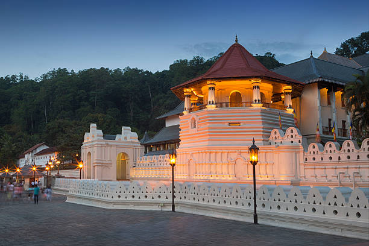

Temple of the Tooth
Temple of the tooth commonly known as "Dalada Maligaya" is a Palace situated in Kandy, Sri Lanka. As the Buddhists believe, the tooth relic of load Buddha is kept here. There is also a museum where some of the ancient items kept related to the Temple of the tooth and Mahanuwara Era. Annually there is a procession called "Esala Perahara" which is a great event to see the talents of Sri Lankan Artist. This procession is held on the full moon poya day in month of August
Distance from Colombo : 122.3km
Tansport : Bus , Train , Private Vehicle